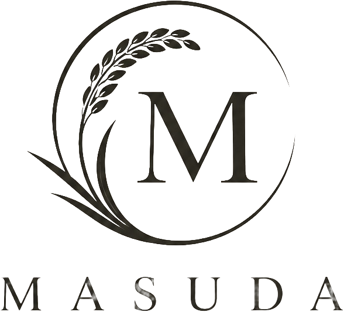
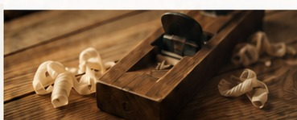
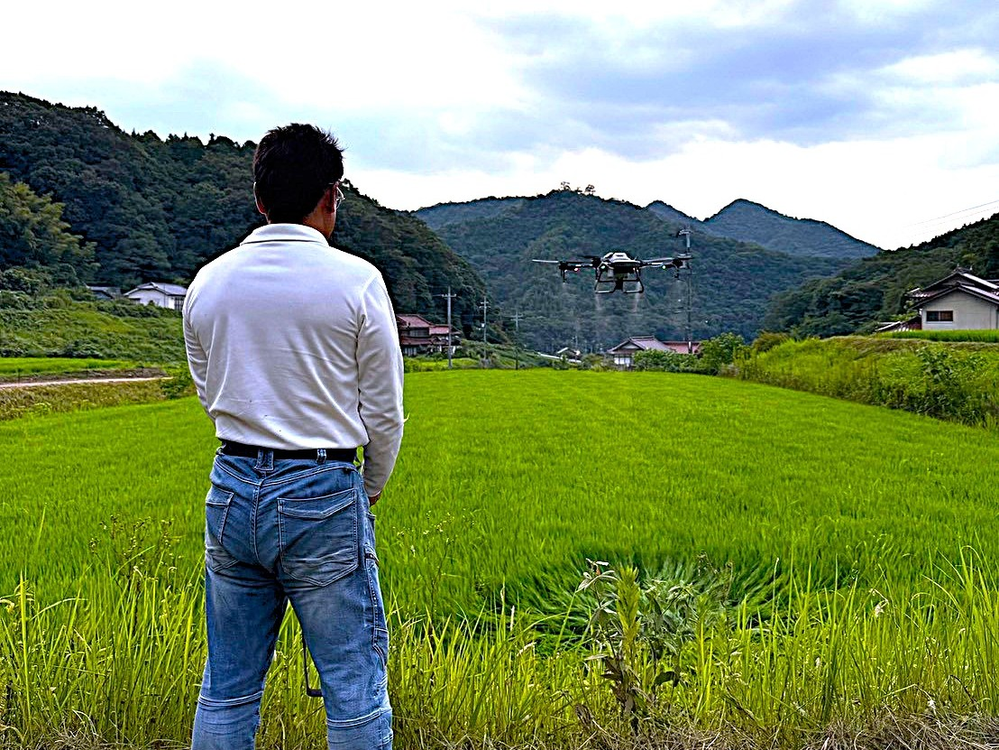
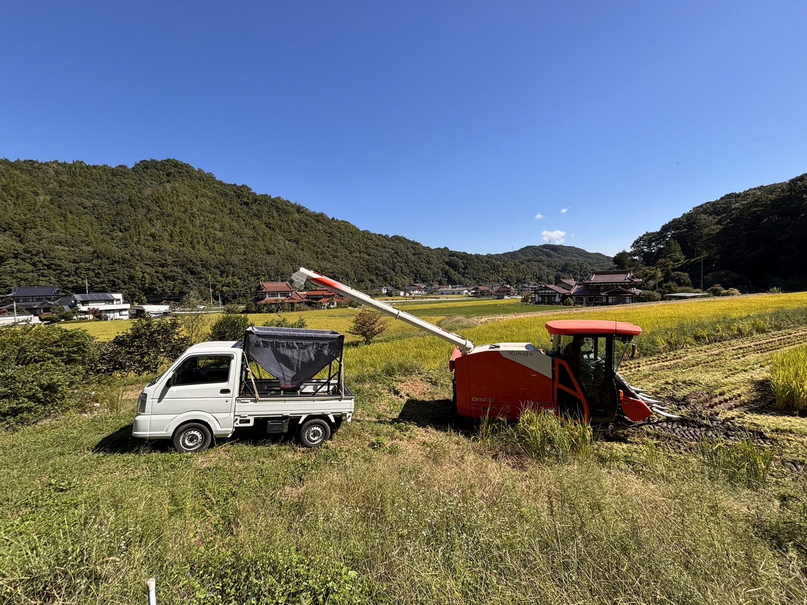

丁寧につくる
家づくりも米づくりも、基本は同じ。目の前の仕事を一つひとつ丁寧に積み重ねます。

ABOUT MASUDA
家をつくるように、米をつくる。
OUR STORY
MASUDAは、広島県三原市本郷町上北方で米づくりに取り組んでいます。
もともと私たちが続けてきたのは、大工の仕事。家づくりでは、目に見えない部分まで丁寧に仕上げ、そこで暮らす人のことを考えながら、一つひとつ手を動かしてきました。
その姿勢は、米づくりでも変わりません。田んぼの状態を見て、自然と向き合い、その年、その時に必要な手間を惜しまない。家族や大切な人に安心して食べてもらえるお米を目指しています。

家づくりも米づくりも、基本は同じ。目の前の仕事を一つひとつ丁寧に積み重ねます。
本郷町北方の水、土、気候を見つめながら、田んぼの力を活かした米づくりを続けます。
自分たちの家族にも食べてもらいたいと思えるお米を、食卓へお届けします。
PRODUCER
大工として培ってきた、手間を惜しまない仕事。その経験を田んぼでも活かし、毎日の変化を見ながら米を育てています。
「家をつくるように、米をつくる。」という言葉には、長く大切にしてもらえるものを、丁寧につくりたいというMASUDAの想いを込めています。

